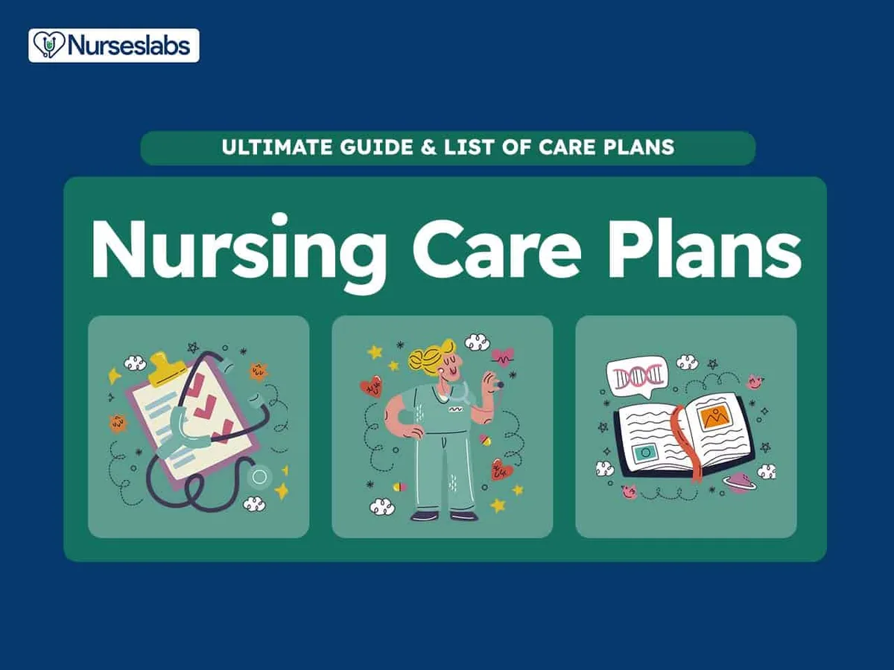

Expanded Nursing Uganda Explanation
Nursing standards and qualities of a nurse should be understood beyond a short definition. Link the concept to patient history, focused assessment, common risks, nursing priorities, documentation and evaluation of outcomes.
Contents — 14 sections (tap to expand)
01 Overview
For-example, to steal is wrong by law and it’s punishable by law. To tell lies is not wrong by law but is wrong by the ethical standards of behavior.
02 Ethical Standards In Nursing
The following are the ethical standards or principles;
- Discipline
- Intelligent obedience
- Punctuality
- Tactiful understanding and patience
- Respect for persons
- Respect for autonomy-that individuals are able to act for themselves to the level o their capability
- Respect for freedom
- Respect for beneficience
- Respect for non-maleficience
- Respect for veracity-truth telling
- Respect for justice-fair and equal treatment
- Respect for rights
- Respect for fidelity-fulfilling promises
- Confidentiality-protecting privileged information.
- High sense of responsibility.
03 **Ethics of nurses**
- Nursing as other professions has its standard of right behaviours that all nurses must adhere Some of the nurses’ ethics are as follows;
- The fundamental responsibility of a nurse is a three (3) fold:-
- > To conserve life
- > To alleviate suffering } CAP
- > To promote health
- The nurse must at all times maintain the highest standard of nursing care and of professional
- A nurse must maintain his/her knowledge and skills at constantly high level
- Religious beliefs of patient must be respected
- Nurses must recognize not only their responsibility but also the limitations of their professional
- Nurses must hold confidence in all personal information entrusted to them.
- The nurse is under the obligation to carryout physicians’ order intelligently with loyalty and to refuse to participate in unethical procedures g. abortion, mercy killing etc.
- A nurse is entitled to just remuneration and accepts only such compensation as the contract, actual or implied
- Nurses should no permit their names to be used in connection with advertisement of products or any other form of self advertisement g. going in public with a uniform.
- A nurse co-operates with and maintains harmonious relationships with members of other professions and with his/her professional
- A nurse should participate and share responsibility(ies) with other citizens and other health professions in promoting efforts to meet the health needs of the public, local, district, national, international component.
04 ROLES OF A NURSE
Nurses work as a team which comprises of nurses, doctors, occupation therapists, social workers, physiotherapists, nutritionists and many others. The following are some of the roles of a nurse;
Care giver: Care giving encompasses the physical psychological, developmental, cultural and spiritual needs
Patient’s advocate and protector: The nurse must represent the client’s/patient’s needs and wishes to other health professionals e.g. client’s wishes foe information to the physician.
Communicator : A nurse should identify patient’s problems and then communicate these verbally or in writing to other members of the health team.
Teacher : As a teacher, the nurse helps patients/clients, their relatives, colleagues and the community to learn about their health and the health care procedures they need to perform to restore or maintain their health.
Counselor : The nurse counsels health individual with normal adjustments, difficulties and focuses on helping the person to develop new attitudes, feelings and behaviours by encouraging the client to look at alternative behaviours, recognize the choices and develop a sense of control.
Nurse educator: Some nurses take up teaching of nursing as their profession for- example as tutors, clinical instructors, lecturers and professors. They maintain their clinical skills and facilitate the development of nursing skills in students.
Manager: Management in nursing is the co-ordination and facilitation of nursing services; nurses are involved in the management of the nursing care by communication i.e.
- Directly with hospitalized patients
- Within the nursing team
- Within the wider health team(including doctors and paramedical staff)
Decision maker: The nurse observes the patient continuously and makes decision regarding nursing diagnosis of the patients and the steps of the nursing process.
Rehabilitator: In the physical medical department, the nurse helps patients in rehabilitation. This is also done in psychiatric department.
05 CHARACTERISTICS OF A PROFESSIONAL NURSE
- Good physical and mental health
- Truthful and efficient in technical competence
- Cleanliness, tidy, neat and well groomed
- Confidence in others and her/himself.
- Open minded, co-operative, responsible and able to develop good interpersonal relations
- Leadership quality
- Positive attitude
- Self-belief towards human care and cure.
- Conveys co-operative attitude towards co-workers.
06 ACTIVITIES/FUNCTIONS OF A NURSE
Some of the functions of a nurse include the following;
- Receiving of patients in out patient department and giving them guidance.
- Admission of patients on wards, ensuring comfort and reassurance to them
- Perform duties such as bed making, dump dusting etc.
- Administer medications to the patients and monitoring the side effects.
- Taking of vital observations i.e. pulse, respirations, blood pressure, oxygen saturation and level of consciousness and record them to the patient’s charts.
- Co-ordinates patients with special services such as physiotherapy, radiotherapy psycho-social support etc.
- It is also the duty of a nurse to co-ordinate patients to the special clinics like diabetic, cardiac, B, skin, cancer institute etc.
- Provides health education, immunization both in the units and out reaches.
- Reinforces and repeats doctor’s explanations to the patients in layman’s language (local language or in simple )
- Knows the number of the patients at her/his unit and their conditions.
- Keeps the ward/unit inventory on daily basis, weekly, monthly and annually
- Makes reports about his/her unit per shift.
07 QUALITIES/STANDARDS OF A GOOD NURSE
Punctuality: This is vital for smooth running of the hospital and speedy recovery of the patients, so a nurse is required to be punctual while performing all duties.
Confidentiality: A nurse is to ensure that the patient’s diagnosis, problems and condition are not discussed with outsiders who are not involved in the patient’s health care. The information should only be released to the relatives and friends with the patients consent.
Fidelity: Obligation to remain faithful to ones commitments
Empathetic: Awareness of and insight into feelings, emotions and behavior of another person and their meaning and significance
Resourcefulness and initiative: The nurse should be able to act immediately during emergency by using her/his common sense, knowledge and with ability to use the available resources or equipment for the benefit of the patients. S/he should execute nursing care with in her/his professional level of responsibility.
Alert and observant: It is the power to see, hear and appreciate what is being done and act accordingly and intelligently.
Tactfulness (creativeness) : A nurse must be careful to say and to do the right thing with greatest consideration for the other person’s feelings.
Faithfulness: The nurse should remain true or loyal to the patients always while executing her duty. Also to the colleagues and any other thing entrusted to her.
Loyalty: A nurse must be loyal to her patient colleagues, superiors for the good of the patient.
Truthfulness and genuineness: A nurse must be honest in word and deed to her patients, fellow workers, with self and the entire community. This is the most important, vital virtue and of special value to nursing profession. She should also be able to admit her mistakes whether discovered by herself or by someone else.
Speed and gentility: The nurse should always act fast and in a responsible and polite manner while carrying out her/his procedures especially during the emergencies.
Accuracy (in decision making): The nurse should be correct and precise in whatever she does because the life of the patient is in her hands.
High sense of responsibility; to promote health, restores health and alleviates suffering.
Respectful: The nurse should show respect to self, patient, seniors, juniors and all people in authority.
Courteous: It costs nothing to be polite and considerate to others. S/he should be straight forward in all s/he does.
Integrity: S/he should adhere to moral principles of the profession and be honest to the patients/clients.
Justice: All individuals will have equal and fair access to health care, resources available according to an individual’s need.
Caring: It is the obligation of the nurse to give service of care to the sick person as her calling meeting the patient’s physical, spiritual and psychological needs.
Co-operative : The nurse should have a sense of working with others, so as to be able to give adequate and quality care to the patients and entire community.
Accountable: A nurse must be responsible for any action done either to the patients or for the hospital.
Responsiveness: S/he should be able to react quickly to the situation at hand e.g in emergencies.
Being considerate: A nurse should be thoughtful or kind to the patients when rendering health services to them.
Poise: S/he should be composed or show dignity of manner while carrying out her/his duties.
Intelligent: The nurse should show high sense of knowledge during performance of the procedures to the patients.
Control of emotions: A nurse should be good tempered and able to control or cope with emotions such as anger, irritation, love or hatred. The nurse needs to develop emotional maturity in order to manage the problems and different behaviours of the patients, caretakers and fellow colleagues.
Tolerance and understanding: A nurse must realize that the patients are physically, emotionally, psychologically sick and worried about their health, disease, homes and family. Therefore human understanding, sympathy together with technical knowledge and efficiency are foundation on which a true profession nurse must build her career.
Cleanliness: Personal and environmental cleanliness and tidiness are essential to quick recovery of the patients and the nurse herself. Apart from other infection control methods, orderliness plays a role in the prevention of disease and infections.
N.B Nurses learn about professional values both from formal institutions and from informal observation of practicing nursing staff and gradually incorporates professional values into their personal value system. Some of the values are non-moral and others are moral. Example of non-moral values include the following;
- Hairstyle
- Uniform
- Colours
- Fashions of shoes
There are two principles under-minding ethical practices in nursing and health care i.e. beneficience -the obligation to do good, non-maleficience -obligation to do no harm. The two are related but distinct and if the distinction is recognized, it helps to guide moral conduct of a nurse.
08 AIMS OF A NURSE
- To help save life
- To help prevent further suffering
- To help prevent disease and improve the health of the fellow men.
- To assist the individual by performing those activities or duties which he would if able to and knowledgeable by himself.
Liberal Meaning of the word ‘Nurse’
N-N obility/K n owledgeable
U-U sefulness/ U nderstanding
R-R esponsibility
S-S implicity/ S ympathy
E-E fficiency/ E quanimity
09 PROFESSIONAL CODE OF CONDUCT
Is the way how one must behave towards his/her clients/patients, institution and the entire community which is acceptable professionally and publicly. The code of conduct is as follows;
Self:
- Report any conduct that endangers client/patients.
- Stay informed of current nursing practices, theory and issues and make judgement based on facts
Client/patient:
- Provide clients/patients with accurate information about care and conduct nursing in a manner that ensures clients’ safety and well being.
Professional:
- Maintain ethical standards in practice. Encourage other professional peers to follow the same ethical standards
- Report colleagues with unethical behaviours
Employment institution
- Follow practices and procedures defined by the institution.
Community/society:
- Maintain ethical conduct in the care of all clients in all settings.
- Every health worker must conduct him/her self in a manner that is acceptable professionally and publicly at all times.
10 Code of conduct and ethics for health workers Part IV.
Article 29. Code of conduct
This part of the act shall constitute a code of conduct and shall be observed by all health workers.
Article 30. Responsibility to patients
- A health worker shall hold the health, safety and interest of the patient to be first consideration and shall render due respect to each patient at all times and in all circumstances.
- Ensure that no action or omission on your part or sphere of responsibility is detrimental to the interest or condition or safety of the patient.
- A nurse shall provide a patient with relevant, clear and accurate information about his/her health and the management for her/his condition.
- Treatment and other forms of medical intervention to a patient who has capacity to consent shall not be undertaken without the patient’s full free and informed consent except in emergencies when such intervention may be done in the best of the patient. Incase of minor or other incompetent patients, consent shall be obtained from apparent/relative/guardian or the head of the hospital.
- The nurse shall respect the confidentiality information relating to the patient and his family; such information shall not be disclosed to anyone without the patient’s consent or appropriate guardian, except where it is the best interest of the patient
- A health worker who attends to a person held in detention shall do so in the interest of the detainee and strict confidentiality must be observed just as with other patients
- A health worker shall no take, ask or accept any bribe from the patient or relatives.
- Maximum care shall be taken not to compromise the confidentiality and interest of the patient when carrying out an examination or supplying a report at the request of an authorized person.
- A health worker shall no abandon a patient under his/her care.
Article 31. Responsibility to the community
- The nurse should ensure that no action or omission on her/his part or sphere of responsibility is detrimental (endangers) the interest or condition or safety of the public.
- A health worker shall promote the provision of effective health services and shall notify the health team and other authorities whenever he/she becomes aware of the hazard to the community e.g. out break of cholera, dysentery, Ebola etc.
Article 32. Responsibility to health unit/institution (place of work)
- The health worker shall abide by the rules and regulations governing the place of work and shall confirm to the expectations of the health unit, and strive to fulfill the mission of the institution.
Article 33. Responsibility to law, profession and self
- A health worker shall observe law; uphold the dignity of his/her profession and accepted ethical principles.
- A health worker shall not engage in activities that discredit his/her profession or delivery of health services and shall expose without fear or favour all those who engage in illegal or unethical conduct and practice e.g. stealing, poor dressing code etc.
- The health worker shall respect the confidentiality of information relating to the patient and his/her family, such information shall not be disclosed to anyone without the patient’s or appropriate guardian’s written consent except where it is required by law.
- A health worker shall keep a high standard of professional knowledge and skills in order to maintain a high standard of professional competence through continuing medical education program.
- A health worker shall not directly or indirectly advertise his/her professional skills or allow him/her to be advertised directly or indirectly and shall not entice patients from his /her colleagues except h/she shall notify the public of the services available in the health facilities.
- A health worker shall not perform his/her duties under the influence of alcohol.
- A health worker shall not indulge in dangerous life styles such as alcoholism, drug addiction, that discredit the profession
- The health worker shall not support or become associated with cults or unscientific practices professing to contribute to heath care.
- A health worker shall be registered with his/ her relevant professional council to be a member of the national association.
- Nurses shall acknowledge any limitation in their knowledge and competence and decline any duty or responsibility unless able to perform them in a safe and skilled manner.
Article 34. Responsibility to colleagues:
- A health worker shall co-operate with his/her professional colleagues, recognize and respect each others expertise in the interest of providing the best possible holistic care as a health team.
11 Nursing Uganda Clinical Lens
Use The role of the nurse as a practical nursing topic, not only a memorized definition. Translate theory into safe decisions, accountability, communication and service improvement.
- What to understand first: define the role of the nurse, identify the normal or expected pattern, then explain what changes when the patient is unwell.
- Why it matters in care: the nurse must recognize risk early, explain findings clearly, document accurately and know when to escalate.
- How to revise it: connect each point to assessment, nursing diagnosis or care problem, intervention, rationale and evaluation.
12 Assessment Guide
- The problem, stakeholders, available resources, policy requirements and ethical issues.
- Risks to patients, staff, confidentiality, quality, costs and continuity.
- Documentation, reporting lines, supervision and evaluation measures.
13 Nursing Priorities, Rationales and Outcomes
- Use evidence, policy and professional standards to guide action.
- Communicate clearly, document decisions and protect confidentiality.
- Evaluate whether the action improves safety, learning or service delivery.
The rationale for these priorities is patient safety: nursing actions should prevent deterioration, reduce discomfort, support recovery and create clear evidence for the next caregiver.
- Expected outcome: The plan is documented, realistic, ethical and improves patient care or learning outcomes.
14 Patient Teaching and Revision Check
- Explain the role of the nurse in simple language the patient or caregiver can repeat back.
- Teach warning signs, medicine or follow-up instructions, hygiene or lifestyle points where relevant.
- For exams, prepare a short answer using: definition, causes or risk factors, signs, assessment, management, complications and prevention.
- For ward practice, document baseline findings, actions taken, patient response and the plan for review.
Illustrations and Diagrams (1)

Related Video Lectures
Watch nursing lecture videos on YouTube for this topic. Opens in a new tab.
Watch on YouTubeExternal link: YouTube may use its own cookies and terms. Nursing Uganda is not affiliated with YouTube.